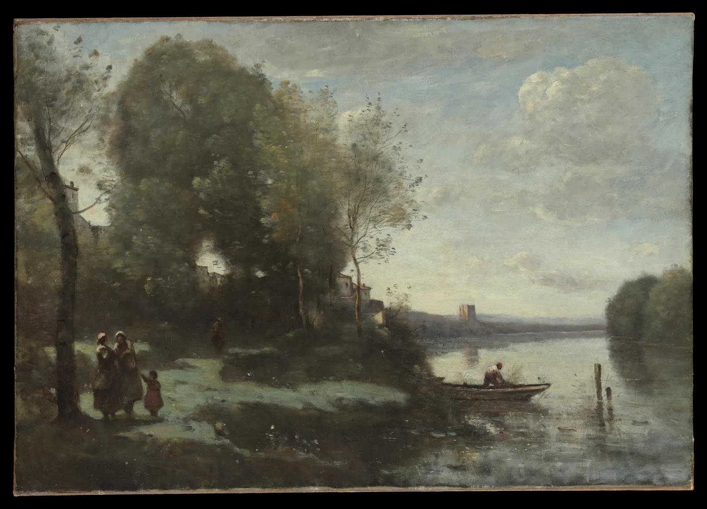

채도와 톤
형광펜으로 교과서를 칠하다 보면 어느 순간 거의 모든 줄이 노랗게 되어 있다. 그러면 형광펜은 더 이상 아무것도 강조하지 않는다. 색의 선명함도 마찬가지다. 선명한 색은 귀하게 쓸 때만 일한다. 이 장은 색의 세 번째 성질인 채도를 다룬다. 채도를 올리고 내리는 법, 색마다 다른 채도의 한계, 회색과 탁한 색이 가진 힘, 그리고 화면 한 장에 선명한 색을 얼마나 쓸지 정하는 "채도 예산"을 직접 만져 본다.
- 채도가 명도와 독립된 축이라는 것, 채도를 끝까지 올리면 화면의 한계에 부딪힌다는 것을 본다.
- 낼 수 있는 최대 채도가 색상과 명도에 따라 크게 다르다는 것을 지도로 확인한다.
- 탁한 바탕이 선명한 색 하나를 살리는 원리를 시뮬레이터로 확인한다.
- 보색 물감을 섞어 만든 회색과 무채색 회색의 차이, 틴트·톤·셰이드의 차이를 안다.
- 명화와 디자인에서 선명한 색이 차지하는 넓이(채도 예산)를 재고 직접 계획한다.
모두 선명하면 시끄럽다
6장에서 색의 세 성질 중 명도를 먼저 봤다. 이번에는 채도(Chroma)다. 채도는 색이 같은 밝기의 회색에서 얼마나 멀리 떨어져 있는가, 곧 색기가 얼마나 진한가를 말한다. 채도가 0이면 회색이고, 커질수록 "선명하다", "쨍하다"고 느낀다. 채도가 낮은 색을 흔히 탁한 색, 칙칙한 색이라고 부른다. 탁한 색은 나쁜 색이 아니다. 이 장의 주인공은 오히려 탁한 색이다.
먼저 그림 한 장으로 문제를 본다. 왼쪽과 오른쪽은 같은 책장이다. 각 책의 명도는 양쪽이 같고, 다른 것은 채도뿐이다.
#d8352a). 같은 색이 옆의 색에 따라 강조가 되기도 하고 소음이 되기도 한다.채도를 다루는 첫걸음은 명도와 색상은 그대로 둔 채 채도만 움직여 보는 것이다. 아래 시뮬레이터는 OKLCH 공간에서 명도(L)와 색상(h)을 고정하고 채도(C)만 바꾼다. 아래 띠는 같은 명도·색상에서 채도를 0부터 0.35까지 늘어놓은 것이고, 빗금 친 부분은 화면(sRGB)이 낼 수 없는 채도다.
채도만 움직이기
#2f7d5b)다. 아래 흑백 줄은 채도가 바뀌어도 거의 그대로다. 채도와 명도는 다른 축이다. ② 채도를 끝까지 민다. 0.12 근처에서 빗금이 시작되고, 그 뒤로는 색이 더 선명해지지 않는다. 화면이 낼 수 있는 한계다. ③ "단순히 자르기"를 켜고 다시 끝까지 민다. 이번에는 한계를 넘는 순간 색상이 틀어지고 흑백 줄의 밝기도 출렁인다. 색역 밖의 값을 채널별로 잘라 낸 결과다. ④ 노랑으로 바꾸고 명도를 0.4까지 내린다. 노랑은 어두워지면 낼 수 있는 채도가 확 줄어 올리브가 된다(다음 절). (OKLCH 기준. 색역 밖은 이 책의 엔진이 명도와 색상을 지키며 채도만 줄여 보여 준다(CSS Color 4의 방식). 화면 색은 기기마다 다르다.)채도를 올리면 색은 점점 진해지지만 무한히 진해지지는 않는다. 화면이 낼 수 있는 빛의 조합에는 끝이 있고, 그 끝, 곧 색역(Gamut)의 경계에서 채도는 멈춘다. 물감도 마찬가지다. 튜브에서 짠 물감보다 더 선명한 색은 섞어서 만들 수 없다. 섞을수록 채도는 대개 내려간다(4장).
채도의 한계는 색상과 명도에 달렸다
앞의 시뮬레이터에서 노랑은 밝을 때만 선명했고, 파랑은 오히려 어두운 쪽에서 선명했다. 색마다 가장 선명해지는 명도가 다르다는 뜻이다. 채도를 숫자로 적는 방법부터 짚고 넘어간다. OKLab(또는 CIELAB)은 색을 명도 L과, 빨강–초록 축 a, 노랑–파랑 축 b의 세 숫자로 적는다. a와 b가 만드는 평면에서 원점(회색)까지의 거리가 채도, 방향이 색상이다.
아래 지도는 가로가 색상(0~360°), 세로가 명도인 판이다. 각 칸에는 그 명도·색상에서 화면이 낼 수 있는 가장 선명한 색을 칠했다. 판 위를 눌러 끌면 그 색상의 "채도 한계 곡선"이 아래 그래프에 그려진다. 점선은 정반대 색상(보색 방향)의 곡선이다.
색상마다 다른 채도의 산
이 지도에서 두 가지를 기억해 두면 쓸모가 많다. 하나, 노랑·주황 계열은 밝은 쪽에서, 파랑·보라 계열은 어두운 쪽에서 가장 선명하다. 그래서 "짙은 노랑"이나 "선명한 연파랑"은 화면에서 만들기 어렵다. 짙은 노랑은 갈색이나 올리브가 되고, 연파랑은 어느 정도 이상 선명해질 수 없다. 둘, 명도의 양 끝에서는 모든 색의 채도 한계가 0으로 모인다. 아주 밝은 색과 아주 어두운 색은 어차피 탁하다. 그러니 선명한 색을 쓰고 싶다면 그 색이 선명해질 수 있는 명도에 두어야 한다.
회색의 힘
그림 1의 오른쪽 책장에서 붉은 책이 먼저 보인 것은 그 책이 더 선명해서가 아니다. 왼쪽 책장의 붉은 책과 똑같은 색이다. 다른 것은 둘레다. 눈은 색을 절대값이 아니라 주변과의 차이로 읽는다. 주변이 모두 선명하면 선명함은 정보가 되지 못하고, 주변이 탁하면 조금만 선명해도 눈에 띈다. 아래 책장에서 직접 해 본다. 슬라이더는 붉은 책을 뺀 나머지 모든 것의 채도를, 책장 위를 끌면 선명한 책의 자리를 바꾼다.
탁한 바탕이 선명한 하나를 살린다
무엇을 강조할지는 대비 전체의 문제라 8장에서 더 넓게 다루지만, 채도로 강조를 만들 때의 요령은 하나로 정리된다. 선명한 색을 더 선명하게 만들지 말고, 나머지를 탁하게 눌러라. 화면이나 물감이 낼 수 있는 채도에는 한계가 있지만, 나머지를 누르는 데에는 한계가 없다.
살아 있는 회색 만들기
탁한 색을 만드는 방법은 크게 둘이다. 검정·흰색·회색을 섞는 방법과, 반대 계열의 색, 곧 보색(Complementary color)을 섞는 방법이다(보색의 정의는 색상환마다 다르다. 5장). 물감에서 보색끼리 섞으면 서로가 돌려보내는 빛을 흡수해, 특정 비율에서 채도가 거의 0인 회색이 된다. 수채화가들이 즐겨 쓰는 울트라마린 블루와 번트 시에나의 회색이 대표적이다.
아래에서 두 물감의 비율을 바꿔 가며 혼합색과, 같은 명도의 무채색 회색을 나란히 놓고 비교한다. 위의 띠는 두 물감을 0%부터 100%까지 섞은 색의 연속이다.
보색으로 섞은 회색과 무채색 회색
검정을 섞어서 만든 회색과 보색을 섞어서 만든 회색은 수치로는 비슷할 수 있다. 차이는 그 다음에 생긴다. 보색 회색은 두 물감의 비율을 조금씩 바꾸면 따뜻한 회색에서 차가운 회색까지 한 쌍의 물감으로 연속해서 오갈 수 있고, 그림 속의 다른 색들과 같은 안료로 이어져 있어 화면이 하나의 빛 아래 있는 것처럼 묶인다. 많은 수채화 교본이 검정 물감 대신 보색 혼합으로 어둠과 회색을 만들라고 권하는 이유다. 다만 이것도 취향과 표현의 문제다. 검정을 대담하게 쓰는 화가도 많고, 수묵화는 먹의 검정 하나로 모든 회색을 만든다(6장).
틴트, 톤, 셰이드
순색에 무엇을 섞느냐에 따라 탁한 색에도 가족이 생긴다. 흰색을 섞으면 틴트(Tint), 밝아지고 연해진 색이다. 검정을 섞으면 셰이드(Shade), 어두워지고 깊어진 색이다. 회색을 섞으면 톤(Tone), 명도는 비슷하게 남고 채도만 가라앉은 색이다. 이 세 말은 미술 교육에서 오래 써 온 구분이다. 우리가 흔히 "파스텔 톤", "톤 다운"이라고 부르는 것도 이 가족에 해당한다.
#d8352a), 왼쪽 위가 흰색, 왼쪽 아래가 검정이다. 위쪽 변이 흰색을 섞어 가는 틴트, 아래쪽 변이 검정을 섞어 가는 셰이드, 삼각형 안쪽이 회색을 섞은 톤이다. 왼쪽 변은 채도가 0인 무채색이다. 이 그림은 OKLab에서 세 색을 비율대로 섞어 칠했다(빛의 평균에 가까운 디지털 혼합). 물감으로 섞으면 같은 비율이라도 결과가 다르다. 독일의 색채학자 오스트발트(Wilhelm Ostwald)의 색 체계, 미국의 색채 연구가 파버 비렌(Faber Birren)의 책들이 이런 삼각형으로 색의 가족을 설명했다.디지털 도구에서는 이 가족을 만들 때 물감을 흉내 낼 필요가 없다. 지각 균일 공간에서 명도를 단계별로 나누고, 각 단계에서 낼 수 있는 채도 안에서 색을 고르면 된다. 이 책의 엔진에서는 이것을 ART.toneScale이라고 부른다. 웹사이트의 버튼, 배경, 테두리에 쓰는 같은 계열의 밝고 어두운 색 묶음, 곧 톤 스케일(Tone scale)이 이렇게 만들어진다. 아래에서 물감으로 만든 세 가족과 OKLCH 톤 스케일을 비교한다.
틴트·톤·셰이드와 톤 스케일
물감의 셰이드는 색상이 미끄러지고, 디지털 톤 스케일은 색상이 고정된다. 어느 쪽이 좋은지는 쓰임에 달렸다. 그림에서는 어두운 쪽으로 갈수록 색상이 조금씩 움직이는 것이 오히려 자연스럽다. 실제 물체의 그림자도 대개 그렇다(10장). 반면 웹사이트의 버튼 색 단계는 색상이 흔들리면 같은 브랜드 색으로 보이지 않으므로 고정하는 편이 낫다. 톤 스케일로 UI 팔레트를 짜는 방법은 14장에서 이어진다.
명화의 채도 예산
실제 그림에서 선명한 색은 얼마나 넓을까. 미국 출신의 화가 제임스 맥닐 휘슬러는 자기 그림에 「회색과 검정의 배열」, 「살색과 검정의 배열」처럼 음악 제목 같은 이름을 붙여, 그림이 무엇을 그렸는가보다 색과 톤의 배치가 먼저라는 생각을 드러냈다.


두 그림의 채도를 재 본다. 아래 시뮬레이터는 그림의 모든 점의 OKLCH 채도를 계산해, 기준값보다 선명한 점만 원래 색으로 남기고 나머지는 같은 명도의 회색으로 바꾼다. "채도 지도"로 바꾸면 채도가 높을수록 밝게 칠한다.
그림 속 선명한 색은 몇 퍼센트인가
두 화가는 반대 방향에서 같은 원리를 보여 준다. 휘슬러는 화면의 99%를 탁하게 두고 1%도 안 되는 부채에 채도를 몰았다. 코로는 채도를 거의 쓰지 않고, 탁한 색들 사이의 작은 온도 차이로 공기를 그렸다. 반대로 고흐나 마티스처럼 선명한 색을 넓게 쓴 화가들도 있다. 그런 그림에서는 선명한 색끼리의 색상 대비나, 굵은 윤곽선, 강한 명도 구조가 질서를 잡는다. 채도를 많이 쓰는 것이 잘못이 아니라, 많이 쓸수록 다른 무엇이 질서를 잡아 주어야 한다.
채도 예산 설계하기
마지막 시뮬레이터는 서윤의 두 번째 수채화 「비 오는 골목」으로 채도 예산을 직접 짠다. 장면은 비에 젖은 골목, 양쪽 벽, 끝의 건물, 물웅덩이, 창 불빛, 작은 간판, 그리고 우산을 쓴 사람이다. 각 부분의 명도와 색상은 고정되어 있고(명도 구조는 이미 정했다), 채도만 "선명"과 "탁함" 둘 중 하나로 정한다. 그림 속 부분을 누르면 선명↔탁함이 바뀐다. 슬라이더는 두 단계의 채도를 정한다. 오른쪽 판은 채도 지도다. 밝을수록 선명하다.
「비 오는 골목」 채도 예산 설계기
채도 예산은 한 번 정하면 끝나는 숫자가 아니다. 주제가 무엇인지, 화면이 얼마나 멀리서 보일지, 주변이 얼마나 시끄러운지에 따라 바뀐다. 거리의 포스터는 다른 포스터들 사이에서 이겨야 하니 더 많은 채도를 쓰기도 하고, 조용한 서점 안의 안내문은 훨씬 적게 써도 충분하다. 하지만 어느 경우든 순서는 같다. 명도 구조를 먼저 세우고, 그 위에서 넓은 면의 채도를 누르고, 남겨 둔 채도를 주인공에게 준다.
서윤의 작업 노트
명도는 섰는데, 모든 색이 소리친다
6장에서 명도 구조를 세운 포스터에, 서윤은 가을 느낌을 내려고 단풍잎 세 장(주황, 노랑, 빨강)과 알록달록한 책등을 그려 넣었다. 흑백 복사본은 여전히 또렷했다. 그런데 화면에서 보니 어디를 먼저 봐야 할지 모르겠다는 말을 주인에게서 들었다. 같은 주에 그린 「비 오는 골목」의 색 스케치도 마찬가지였다. 벽돌은 주황, 간판은 초록, 우산은 빨강, 물웅덩이는 파랑, 모두 튜브에서 바로 짠 색이었다. 비 오는 날인데 화창한 날 같았다.
서윤은 회사에서 쓰는 방식대로 각 색의 OKLCH 채도를 재 보았다. 포스터 바탕 초록 #2f7d5b는 C 0.094로, 그 명도·색상에서 낼 수 있는 최대(약 0.117)의 80%였다. 잎과 책등도 대부분 0.15를 넘었다. 한도경은 수치 대신 팔레트를 꺼냈다. 울트라마린과 번트 시에나로 따뜻한 회색부터 차가운 회색까지 일곱 칸을 섞어 보이고는 말했다. "선명한 색을 더 키우지 말고 나머지를 눌러. 회색은 빈칸이 아니야." 서윤은 그 회색 띠를 사진으로 찍어 채도 값을 재 도경에게 보여 주었고, 도경은 자기 눈으로 고른 "가장 회색다운 칸"이 숫자로도 채도가 가장 낮다는 것을 신기해했다.
서윤은 포스터 바탕만 같은 명도의 탁한 초록 #567666(L* 47.0, OKLCH 0.54 / 0.045 / 162°)으로 바꿨다. 로고 초록 후보 자체는 그대로 두고, 포스터에서만 탁한 변형을 쓰는 것이다. 명도가 같으니 크림색 제목과의 대비(4.07)도 6장 그대로다. 책등과 잎 두 장은 채도 0.04 이하로 눌렀고, 붉은 잎 하나와 날짜 띠만 #d24f39(OKLCH 0.60 / 0.17 / 32°)로 남겨 크림색 제목 띠 위에 올렸다. 선명한 넓이는 화면의 약 8%다. 「비 오는 골목」은 우산과 물웅덩이에 비친 우산만 선명하게 두고, 벽·길·하늘은 파랑과 번트 시에나의 혼합 회색으로 칠하기로 했다.
#567666 C.045
강조(잎·날짜 띠)#d24f39 C.17
따뜻한 회색#614a42
중간 회색#53454b
차가운 회색#494356
| 「비 오는 골목」의 회색 | 울트라마린 : 번트 시에나 | 프탈로 블루 : 번트 시에나 | 쓸 곳 |
|---|---|---|---|
| 따뜻한 회색 | 3 : 7 | 2 : 8 | 젖은 벽돌 벽, 창 둘레 |
| 중간 회색 | 약 4.5 : 5.5 | 약 3 : 7 | 먼 건물, 길 |
| 차가운 회색 | 6 : 4 | 5 : 5 | 하늘, 물웅덩이, 그림자 |
표의 비율은 이 책의 교육용 물감 모형으로 계산한 출발점이다(가장 회색에 가까운 비율은 울트라마린 약 46%, 프탈로 블루 약 28%). 4장에서 고른 기본 3색 중 파랑이 어느 쪽이든 쓸 수 있게 둘 다 적었고, 실제 물감으로 띠를 만들어 눈으로 다시 맞춘다. 물을 더 타면 명도가 올라가므로, 6장의 명도 구조에 맞춰 농도를 정한다.
#567666, 강조는 #d24f39 하나(약 8%). 「비 오는 골목」은 우산만 선명하게, 나머지는 파랑+번트 시에나 회색 세 가지(따뜻함·중간·차가움)로.핵심 정리
- 채도는 같은 명도의 회색에서 얼마나 떨어져 있는가다. 명도·색상과 독립된 축이라 채도만 바꿔도 흑백 그림은 그대로다.
- 낼 수 있는 최대 채도는 색상과 명도에 따라 크게 다르다. 노랑은 밝을 때, 파랑은 어두울 때 가장 선명하고, 명도의 양 끝에서는 모든 색이 탁해진다.
- 강조는 절대 채도가 아니라 주변과의 채도 차이다. 선명한 색을 키우기보다 나머지를 탁하게 누르는 편이 효과적이다.
- 보색 물감을 섞으면 특정 비율에서 회색이 되고, 비율을 조금 바꾸면 따뜻한 회색과 차가운 회색을 오간다.
- 흰색을 섞으면 틴트, 회색은 톤, 검정은 셰이드다. 노랑에 검정을 섞으면 어두운 노랑이 아니라 올리브가 된다. 디지털 톤 스케일(OKLCH)은 색상을 고정하고 각 명도에서 낼 수 있는 채도 안에서 단계를 만든다.
- 명화는 선명한 색을 아주 작은 넓이에만 쓰는 경우가 많다(휘슬러의 부채는 1% 미만). "60-30-10" 같은 숫자는 검증된 법칙이 아닌 경험칙이다. 순서는 명도 구조 → 넓은 면의 채도 누르기 → 주인공에게 채도 주기다.
확인 퀴즈
1. 포스터의 모든 요소를 최대 채도에 가까운 색으로 칠했더니 빨간 "할인" 표시가 눈에 띄지 않는다. 가장 효과적인 처방은?
2. 서윤이 웹사이트에 "짙고 선명한 노랑" 배경을 만들려고 OKLCH에서 노랑 계열의 명도를 0.45로 낮추고 채도를 올렸는데, 아무리 올려도 올리브빛 갈색만 나온다. 이유는?
3. 수채화에서 울트라마린 블루와 번트 시에나를 섞을 때 일어나는 일로 가장 알맞은 것은?
4. 순색에 회색 물감을 섞어 명도는 비슷하게 두고 채도만 낮춘 색을 부르는 말은?